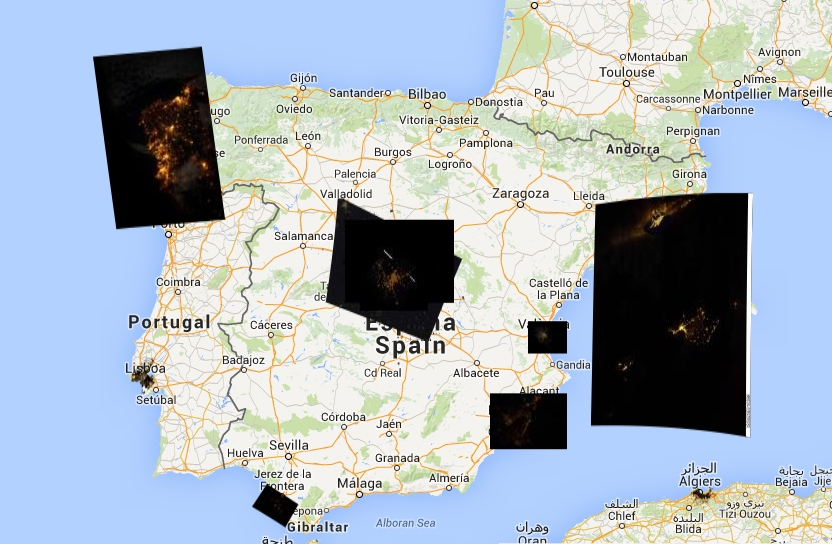

Cities At Night: Georreferenciación de imágenes nocturnas tomadas desde la ISS, para estudios de consumo energético y contaminación lumínica
Gómez Castaño, José; Sánchez de Miguel, Alejandro; Zamorano, Jaime; Lombraña, Daniel
Departamentou de Astrofísica y CC. De la Atmósfera – Universidad Complutense de Madrid GUAIX 29 de Junio de 2016
Indice
- Objetivos
- Contaminación Lumínica
- Procesamiento de Imágenes
- Aplicaciones desarrolladas
- Web CitiesAtNight
- DarkSkies
- LostAtNight
- NightCitiesISS
- Fuentes de datos
- Crowdcrafting
- Resultados de participación
- Imágenes resultantes
Objetivos
Convertir las imágenes una fuente de datos cuantitativos para estudios de Contaminación Lumínica
Recabar colaboración para el trabajo científico
Identificar y clasificar imágenes
Localizarlas y georreferenciarlas
La Ciencia es demasiado importante como para dejarla en manos de los Científicos

Introducción - ¿Desde dónde?

Objetivos de participación
Colaboración
Potenciar conocimiento abierto
Potenciar código fuente abierto
Uso de datos abiertos
¿Contaminación?
¿Contaminación?
En términos científicos, por contaminación lumínica se entiende la alteración de la oscuridad natural del medio nocturno producida por la emisión de luz artificial.

Sánchez de Miguel, A., Zamorano, J., Gómez Castaño, J., & Pascual, S. (2014). Evolution of the energy consumed by street lighting in Spain estimated with DMSP-OLS data. Journal of Quantitative Spectroscopy and Radiative Transfer, 139, 109-117.
Procesamiento de imágenes

Acceso a datos
Metadatos de imágenes
NASA PHOTO ID: iss039e009160.NEF GMT: 2014:04:02 21:06:27 MODEL: NIKON D3S S/N: 2007931 NASA SN and Temp: NASA#2007931 Firmware: Ver.1.00 Image Size: 4288x2844 Compression: Nikon NEF Compressed Exposure Program: Manual Shutter: 1/8 Aperture: 2.8 Meter Mode: Multi-segment Shooting Mode: Single-Frame ISO Speed: 25600 AF Area Mode: Single Area Focal Length: 31.0 mm Lens ID: AF-S Zoom-Nikkor 28-70mm f/2.8D IF-ED DOF: 14.11 m (4.38 - 18.49) Focus Mode: Manual Focus Distance: 7.08 m Subject Distance Range: Unknown Compensation: 0 Noise Reduction: Off Whitebalance: Auto Flash: No Flash Flash Mode: Did Not Fire Flash Commander Mode: Off Flash Compensation: 0 Flash Control Mode: Off Flash Group A Control Mode: Off Flash Group B Control Mode: Off Self Timer Time: 5 s
Sitio web CitiesAtNight
CitiesAtNight acceso directo a imágenes
Aplicación DarkSkies
Aplicación LostAtNight

Aplicación NightCitiesISS
Acceso a aplicaciones y Código fuente
DarkSkies
http://crowdcrafting.org/app/darkskies https://github.com/pmisson/darkskiesISS
LostAtNight
http://crowdcrafting.org/app/LostAtNight/ https://github.com/jgcasta/lostatnight
NitghtCitiesISS
http://crowdcrafting.org/app/nightcitiesiss/ https://github.com/jgcasta/nightcitiesiss
Fuentes de datos

HTML5 Python QGIS gvSIG PostGIS

Open Source Open Science

Permitir la difusión y verificación de resultados
Difusión

Participación

Participación por aplicaciones
| Aplicación | Tareas | Voluntarios |
|---|---|---|
| AppDarkSkies | 112563 | 17070 |
| LostAtNight | 6881 | 7639 |
| NightCitiesISS | 2112 | 4835 |
Resultados Descarga JSON
{
"info": {
"linkData": "http://eol.jsc.nasa.gov/scripts/sseop/photo.pl?mission=ISS037&roll=E&frame=17703",
"link_big": "http://eol.jsc.nasa.gov/sseop/images/ESC/large/ISS037/ISS037-E-17703.JPG",
"link_small": "http://eol.jsc.nasa.gov/sseop/images/ESC/small/ISS037/ISS037-E-17703.JPG",
"citylat": "38.1156879",
"focal": "400.0",
"coordimage": "http://eol.jsc.nasa.gov/scripts/SSEOP/MapCoordinate/MapCoordinate.pl?lat=38.8&lon=10.1",
"idiss": "17703",
"citylon": "13.3612671"
},
"n_answers": 20,
"quorum": 0,
"calibration": 0,
"created": "2014-07-16T21:59:04.755231",
"app_id": 1712,
"state": "completed",
"id": 606386,
"priority_0": 0.921420060044208
Resultados Visualización de imágenes
Resultados - Cáculo de Isofotas
Resultados - Identificación de puntos de emisión

Resultados - Identificación de puntos de emisión

Agradecimientos
Voluntarios....muchos voluntarios
NASA, ESA, MediaLabPrado, CSA-ASC Canada
TV, prensa, redes sociales
Esperamos vuestra participación